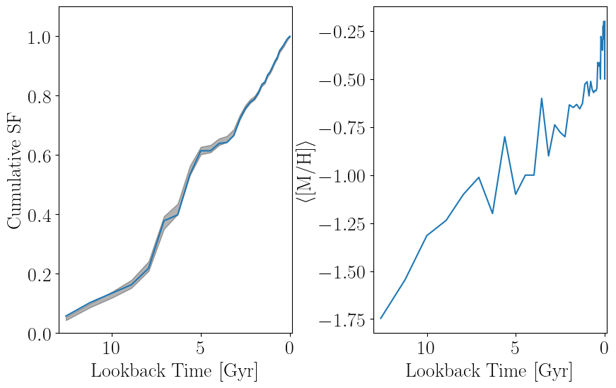

Overview
Why should the metallicity evolution be constrained? While the above methods work well for optimizing the per-template $r_j$ as a means for fitting SFHs, these methods can produce metallicity evolutions that could be considered unphysical, with large changes in the mean metallicity over small changes in time. An example of this type of behavior is shown in the SFH fit below.

While some metallicity variation in the star-forming gas is to be expected, these variations in the SFH fit can end up being quite large depending on the data and isochrone grid adopted. A solution is to construct a more physically-motivated model.
We can do this using a hierarchical model with a parameterized metallicity evolution where the the $r_j$ are not the parameters directly optimized. Rather, we can optimize one stellar mass (or star formation rate) parameter per age bin, and then a number of metallicity evolution parameters that determine how that stellar mass is split between models with different metallicities at fixed age.
In most star formation history analyses, the metallicities are constrained through age-metallicity relations (AMRs), where the mean metallicity at time $t$ is a function of time and a small set of metallicity evolution parameters. A popular AMR model is the linear age-metallicity relation $\langle [\text{M}/\text{H}] \rangle (t) = \alpha \, \left( T_\text{max} - t \right) + \beta$ with a Gaussian distribution in metallicity at fixed age. $T_\text{max}$ here is the earliest lookback time under consideration such that $\langle [\text{M}/\text{H}] \rangle (T_\text{max}) = \beta$. This model is described in more detail here.
AMRs have historically been popular because they are generally capable of producing reasonable fits to observed data and it is relatively easy to derive the gradient of the objective function with respect to the AMR parameters analytically. However, in AMR models there is no direct link between the SFRs being fit and the metallicity evolution as a function of time, even though the two should in principle have some correlation as stellar processes are responsible for enriching the ISM.
A promising avenue of research involves fitting mass-metallicity relations (MZRs) rather than AMRs. In these models, the mean metallicity of stars forming at time $t$ is a function of the total stellar mass of the population at that time – therefore, the mean metallicity evolution changes self-consistently with the SFRs during the fitting process, resulting in a metallicity evolution that is meaningfully coupled to the star formation history. Additionally, AMRs can be difficult to compare between different galaxies because they do not reflect the different SFHs of the galaxies, whereas MZRs can be compared between galaxies much more easily. Our methods for MZR fitting are described in more detail here.
Generic Methods
While there are some methods in this package that are unique to AMR or MZR models, we present a minimal unified interface that can be used to fit SFHs under both types of models. To support multiple dispatch, we define AbstractMetallicityModel as the abstract supertype of AbstractAMR and AbstractMZR, which are each the supertypes for AMR and MZR types, respectively.
StarFormationHistories.AbstractMetallicityModel — Type
AbstractMetallicityModel{T <: Real} is the abstract supertype for all hierarchical metallicity models. Abstract subtypes are AbstractAMR for age-metallicity relations and AbstractMZR for mass-metallicity relations.
The generic methods that can be used for both AMRs and MZRs are described here. The main method for obtaining best-fit star formation histories is fit_sfh.
StarFormationHistories.fit_sfh — Function
fit_sfh(MH_model0::AbstractMetallicityModel,
disp_model0::AbstractDispersionModel,
models::AbstractMatrix{<:Number},
data::AbstractVector{<:Number},
logAge::AbstractVector{<:Number},
metallicities::AbstractVector{<:Number};
x0::AbstractVector{<:Number} = <...>
kws...)
fit_sfh(MH_model0::AbstractMetallicityModel,
disp_model0::AbstractDispersionModel,
models::AbstractVector{<:AbstractMatrix{<:Number}},
data::AbstractMatrix{<:Number},
logAge::AbstractVector{<:Number},
metallicities::AbstractVector{<:Number};
x0::AbstractVector{<:Number} = <...>
kws...)Returns a CompositeBFGSResult instance that contains the maximum a posteriori (MAP) and maximum likelihood estimates (MLE) obtained from fitting the provided simple stellar population (SSP) templates models (with logarithmic ages logAge = log10(age [yr]) and metallicities metallicities) to the provided data. The metallicity evolution is modelled using the provided MH_model0, whose parameters can be free or fixed, with metallicity dispersion at fixed time modelled by disp_model0, whose parameters can be free or fixed.
This method is designed to work best with a grid of stellar models, defined by the outer product of N unique entries in logAge and M unique entries in metallicities. See the examples for more information on usage.
We provide several options for age-metallicity relations and mass-metallicity relations that can be used for MH_model0 and define APIs for users to create new models that will integrate with this function. Similar flexibility is allowed for the metallicity dispersion model disp_model0.
The primary method signature uses flattened formats for models and data. See the notes for the flattened call signature of StarFormationHistories.composite! for more details, as well as stack_models that facilitates rearranging the models into this flattened format.
Arguments
MH_model0is an instance ofAbstractMetallicityModelthat defines how the average metallicity stars being formed in the population changes over time. The fittable parameters contained in this instance are used as the initial values to start the optimization.disp_model0is an instance ofAbstractDispersionModelthat defines the distribution of metallicities of stars forming in a fixed time bin (i.e., the dispersion in metallicity around the mean at fixed time). The fittable parameters contained in this instance are used as the initial values to start the optimization.modelsare the template Hess diagrams for the SSPs that compose the observed Hess diagram.datais the Hess diagram for the observed data.logAge::AbstractVector{<:Number}is the vector containing the effective ages of the stellar populations used to create the templates inmodels, in units oflog10(age [yr]). For example, if a population has an age of 1 Myr, its entry inlogAgeshould belog10(10^6) = 6.0.metallicities::AbstractVector{<:Number}is the vector containing the effective metallicities of the stellar populations used to create the templates inmodels. These should be logarithmic abundances like [M/H] or [Fe/H]. There are some notes on the Wikipedia that might be useful.
Keyword Arguments
x0is the vector of initial guesses for the stellar mass coefficients per unique entry inlogAge. We try to set reasonable defaults, but in most cases users should be calculating and passing this keyword argument. We provideStarFormationHistories.construct_x0_mdfto preparex0assuming a constant star formation rate and total stellar mass, which is typically a good initial guess.kws...are passed toOptim.Optionsand can be used to control tolerances for convergence.
Returns
- This function returns a
CompositeBFGSResultthat contains the output from both MLE and MAP optimizations, accessible viaresult.mleandresult.map. These are each instances ofBFGSResult. See the docs for these structs for more information.
This function returns an instance of CompositeBFGSResult.
StarFormationHistories.CompositeBFGSResult — Type
CompositeBFGSResult(map::BFGSResult, mle::BFGSResult)Type for containing the maximum a posteriori (MAP) AND maximum likelihood estimate (MLE) results from BFGS optimizations that use Optim.jl, which are individually accessible via the :mle and :map properties (i.e., for an instance of this type t, t.mle or getproperty(t, :mle) and t.map or getproperty(t, :map)).
Random samples can be drawn from an instance t as rand(t, N::Integer). This will return a size length(μ) x N matrix. This will use the MLE result for the best-fit values and the inverse Hessian approximation to the covariance matrix from the MAP result, which is more robust when best-fit values that are constrained to be positive approach 0.
Per-SSP coefficients can be calculated with calculate_coeffs(result::CompositeBFGSResult, logAge::AbstractVector{<:Number}, metallicities::AbstractVector{<:Number}), which uses the MLE result (see these docs).
StarFormationHistories.BFGSResult — Type
BFGSResult(μ::AbstractVector{<:Number},
σ::AbstractVector{<:Number},
invH::AbstractMatrix{<:Number},
result,
MH_model::AbstractMetallicityModel,
disp_model::AbstractDispersionModel)Type for containing the maximum likelihood estimate (MLE) or maximum a posteriori (MAP) results from BFGS optimizations that use Optim.jl. Fields are as follows:
μcontains the final values of the fitting parameters. Themodeandmedianmethods will both returnμ, but the mean of samples is not always equal toμdue to the variable transformations we perform.σcontains the standard errors estimated for the parameters and is returned by thestdmethod.invHis the BFGS approximation to the inverse Hessian, which is an estimator for the covariance matrix of the parameters if the objective function is approximately Gaussian near the best-fitμ.resultis the full result object returned by Optim.jl.MH_modelis the best-fit metallicity model.disp_modelis the best-fit metallicity dispersion model.
This type is implemented as a subtype of Distributions.Sampleable{Multivariate, Continuous} to enable sampling from an estimate of the likelihood / posterior distribution constructed from the invH. You can obtain N::Integer samples from the distribution with rand(R, N) where R is an instance of this type. This will return a size length(μ) x N matrix.
You can also directly obtain the per-SSP template coefficients ($r_{j,k}$ in the derivation) using the optimization results stored in a BFGSResult with calculate_coeffs.
See also
CompositeBFGSResultis a type that contains two instances ofBFGSResult, one for the MAP and one for the MLE.
This can be used to obtain random samples under a multivariable Normal approximation to the posterior or used to initialize a Hamiltonian Monte Carlo (HMC) sampling process to obtain more accurate posterior samples with sample_sfh and its multi-threaded alternative tsample_sfh.
StarFormationHistories.sample_sfh — Function
sample_sfh(bfgs_result::CompositeBFGSResult,
models::AbstractMatrix{<:Number},
data::AbstractVector{<:Number},
logAge::AbstractVector{<:Number},
metallicities::AbstractVector{<:Number},
Nsteps::Integer;
ϵ::Real = 0.05, # HMC step size
reporter = DynamicHMC.ProgressMeterReport(),
show_convergence::Bool = true,
rng::AbstractRNG = default_rng())
sample_sfh(bfgs_result::CompositeBFGSResult,
models::AbstractVector{<:AbstractMatrix{<:Number}},
data::AbstractMatrix{<:Number},
logAge::AbstractVector{<:Number},
metallicities::AbstractVector{<:Number},
Nsteps::Integer;
kws...)Takes the SFH fitting result in bfgs_result and uses it to initialize the Hamiltonian Monte Carlo (HMC) sampler from DynamicHMC.jl to sample Nsteps independent draws from the posterior.
The primary method signature uses flattened formats for models and data. See the notes for the flattened call signature of StarFormationHistories.composite! for more details, as well as stack_models that facilitates rearranging the models into this flattened format.
Arguments
models, data, logAge, metallicitiesare as infit_sfh.Nstepsis the number of Monte Carlo samples you want to draw.
Keyword Arguments
ϵis the HMC step size. Convergence of the HMC samples is checked after sampling and if a convergence warning is issued, you should decrease this value.reporteris a valid reporter type from DynamicHMC.jl, eitherNoProgressReport,ProgressMeterReportfor a basic progress meter, orLogProgressReportfor more detailed reporting.show_convergenceiftrue, will send sample convergence statistics to the default display.rngis aRandom.AbstractRNGsampler instance that will be used when generating the random samples.
Returns
A NamedTuple with two elements:
posterior_matrixis aMatrixwith dimensions(npar, Nsteps)wherenparis the number of fitting variables in the problem and isnpar = length(bfgs_result.mle.μ). Each column is one independent sample.tree_statisticscontains convergence statistics that can be viewed withDynamicHMC.Diagnostics.summarize_tree_statistics.
See also
- [
tsample_sfh(@ref StarFormationHistories.tsample_sfh) for multi-threaded version.
StarFormationHistories.tsample_sfh — Function
tsample_sfh(bfgs_result::CompositeBFGSResult,
models::AbstractMatrix{<:Number},
data::AbstractVector{<:Number},
logAge::AbstractVector{<:Number},
metallicities::AbstractVector{<:Number},
Nsteps::Integer;
ϵ::Real = 0.05, # HMC step size
show_convergence::Bool=true,
show_progress::Bool=true,
rng::AbstractRNG=default_rng(),
chain_length::Integer=100)
tsample_sfh(bfgs_result::CompositeBFGSResult,
models::AbstractVector{<:AbstractMatrix{<:Number}},
data::AbstractMatrix{<:Number},
logAge::AbstractVector{<:Number},
metallicities::AbstractVector{<:Number},
Nsteps::Integer;
kws...)Multi-threaded version of sample_sfh; see that method's documentation for details.
Implementation
This method splits the requested number of samples Nsamples into a number of independent HMC chains, each of which has length chain_length. Initial positions for each chain are randomly drawn from the multivariate Gaussian approximation to the objective function stored in bfgs_result, approximating a warm start. Smaller values of chain_length achieve better load balancing while larger values of chain_length allow each chain more time to mix (see also Chen et al. 2020). The default value of 100 results in good mixing with 24 fitting variables and a well-scaled step length ϵ – higher dimensional problems should increase chain_length. The downside to large chain_length is poor load balancing across available threads resulting in longer runtimes.
Notes
- if
show_progressistrue, we will show a progress bar that updates when individual chains complete. Currently this is not terribly useful unless the total number of chains is much greater than the number of available threads.
The per-SSP stellar mass coefficients ($r_{j,k}$ in the derivation) can be derived from a metallicity model, a metallicity dispersion model, the per-unique-log(age) stellar mass coefficients ($R_j$ in the derivation), and the set of SSP logarithmic ages logAge = log10(age [yr]) and metallicites using calculate_coeffs. Alternatively a CompositeBFGSResult can be fed into this method and the first three arguments will be read from the result object.
StarFormationHistories.calculate_coeffs — Function
calculate_coeffs(MH_model::AbstractMetallicityModel,
disp_model::AbstractDispersionModel,
mstars::AbstractVector{<:Number},
logAge::AbstractVector{<:Number},
metallicities::AbstractVector{<:Number})Returns per-SSP stellar mass coefficients ($r_{j,k}$ in the derivation) using the provided metallicity model MH_model and metallicity dispersion model disp_model for the set of SSPs with logarithmic ages logAge and metallicities metallicities.
Examples
julia> n_logage, n_mh = 10, 20; # Number of unique logAges, MHs
julia> coeffs = calculate_coeffs(PowerLawMZR(1.0, -1.0),
GaussianDispersion(0.2),
rand(n_logage),
repeat(range(7.0, 10.0; length=n_logage); inner=n_mh),
repeat(range(-2.0, 0.0; length=n_mh); outer=n_logage));
julia> coeffs isa Vector{Float64}
true
julia> length(coeffs) == n_logage * n_mh
true